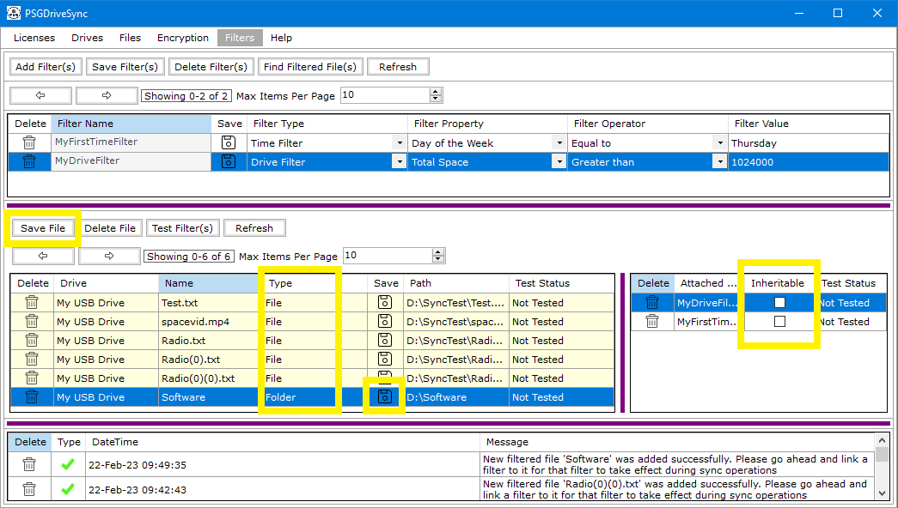

1
First you need to decide which drive do you intend to add filtered files from into the "Filters" window and then you need to mount and dock that drive in the "Files" window. Make sure that drive is in "Browse" mode.
2
You need to check all the files and folders that you would like to add to the "Filters" window as filtered file and then right click on any one of them or if its just one file or folder that needs to be added as a filtered file then you can straight away right click on that file or folder. When the right click menu opens up then click on "Send To Filters Window".
3
Go to the "Filters" window and make sure that all those file(s) and folders(s) which were selected in step 1 above are showing in the filtered files panel. The system messages panel will also contain information of transfer of those files and folders into the "Filters" window.

4
Select one of the filtered files showing in the "Filters" window and drag a filter from the list of filters into the section next to the filtered files panel. if more than one filter is needed to be linked to a filtered file at one time then select all those filters and drag any one of them over to the area next to the filtered files panel as shown in the screenshot.
5
You do have the option to set any attached filter as "Inheritable" by checking the box labelled as "Inheritable" right next to the filter name however this option is only available for
folders and not files since files cannot contain any any other file or folder.
For files the check box labelled as "Inheritable" should show as greyed out with "false" written in it. For folders this option is always available as shown in the screenshot.
With both files and folders you can use the "Save" option to save the filtered file.
